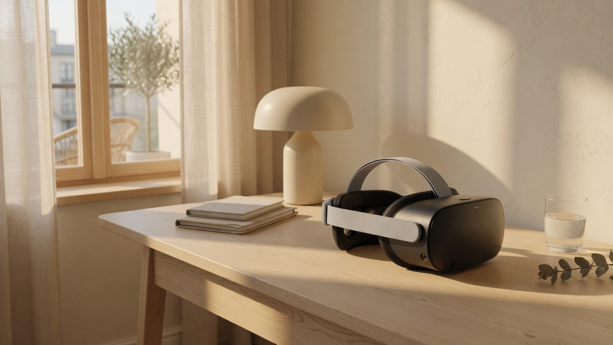
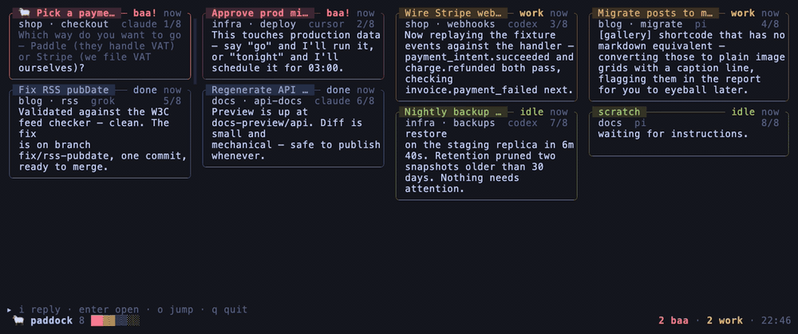
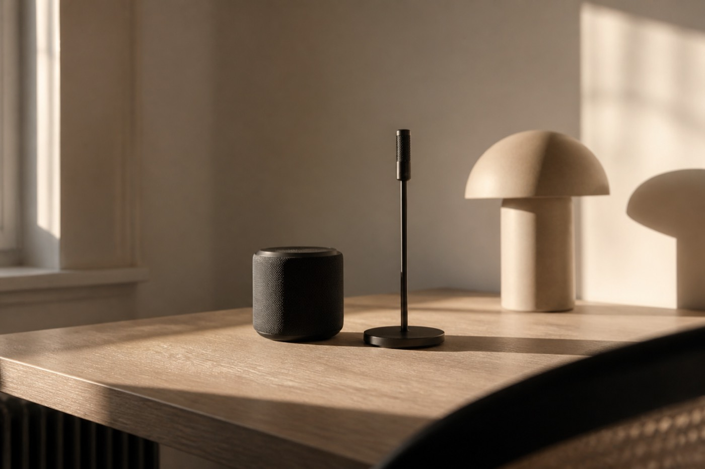

moshVR

A native mosh and SSH terminal for Meta Quest. No PC streaming. Watch a session on an xterm wall; confirm before anything is sent to the host.
herdr-paddock

A card-wall feed for your herdr flock. Blocked agents bleat to the top. Each card is the agent’s output, cleaned. Plain SSH — no relay, no web server.
github.com/neyham/herdr-paddockAI Usage Dashboard

A local desktop cockpit for Claude, Codex, Grok, Cursor, and Antigravity usage windows, plus DeepSeek API balance. No dashboard account. No telemetry.
github.com/neyham/ai-usage-dashboardha-agent-speaker

Turn a Linux box into a wake-word voice agent. Local listen, Whisper, an LLM with tools, optional Home Assistant, then Piper out of the speakers.
github.com/neyham/ha-agent-speakerfinaudit
A public index of financial-audit skills and official data sources. Prompts and links you can hand to an agent or follow yourself.
audit.neyham.comregnews
Headlines from nine Chinese regulators, each item a link to the original notice. No commentary.
reg.neyham.comreport
Annual-report PDFs for 41 foreign-invested banks in China, 2024 and 2025. Source filings only.
report.neyham.com/library.htmlCAS Chill
Chinese Accounting Standards as Chill Jazz study albums.
space.bilibili.com/35899585